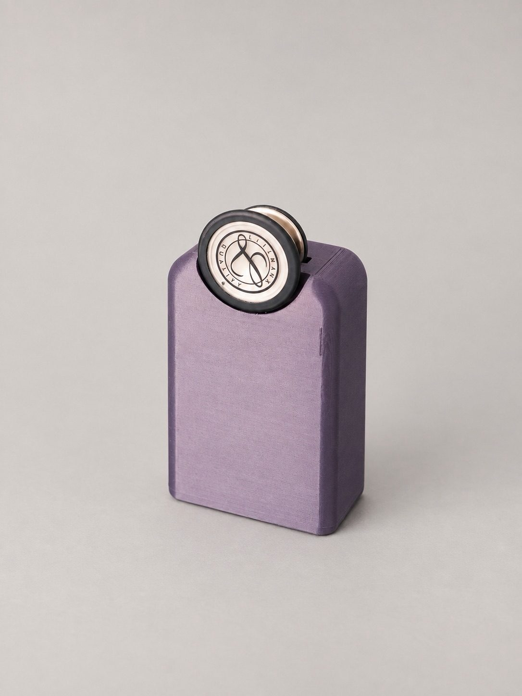
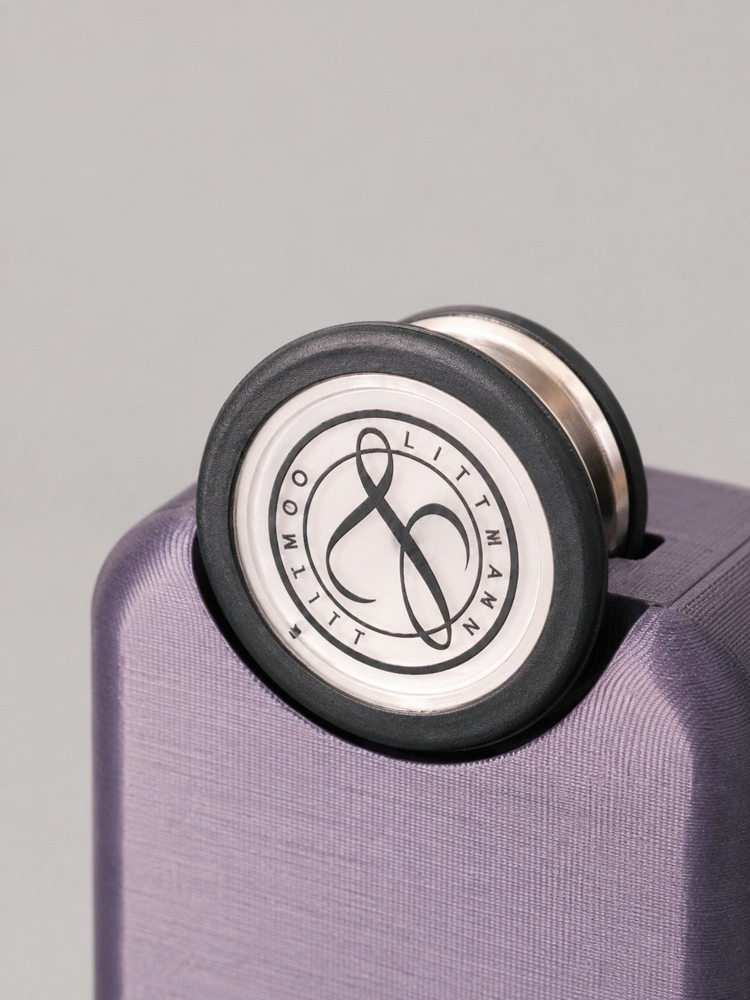

an archive of ongoing experiments
Creative technologist working across sound, form and code — installations, instruments, workshops. Bucharest, RO.
ArtworksWorkshopsCollabsExhibitionsSound & instruments


NEWCollab — 2026
Heartbroken
A modified medical stethoscope, fitted with an amplifier and a custom casing. The heartbeats it captures are passed through a distortion pedal and ultimately into a speaker.
- Concept
- Michelle Bressan
- Design & production
- Denis Flueraru
- Materials
- Stethoscope, amplifier, distortion pedal, speaker
- Year
- 2026
Index
- 001Heartbroken NEW2026CollabCollab with Michelle Bressan
- 002Caprices Festival2026CollabGstaad, CH
- 003about:sound2026WorkshopDâmbovița Delivery — Regie, Bucharest
- 004Microphones, Code & Pen Plotters2026WorkshopLibra Bank Cultural Programme, Bucharest
- 005Loop Studies I–IV2025ArtworkMAMŰ, Budapest
- 006Hush Glitches2025CollabNational Dance College, Bucharest
- 007Yokogawa — Fresh Water Generator2025CollabFabLab Bucharest
- 008Artists Play with Time2025CollabPerformances across the EU
- 009A Horizont Lényege II2025ExhibitionMAMŰ Társaság, Budapest
- 010The Main Point of the Horizon2025ExhibitionReduta Cultural Centre, Brașov
- 011Sensors & Haptics for Performative Arts2025WorkshopNOD Makerspace, Bucharest
- 012Start Pentru Tineri2025WorkshopsubStejar, Târgu Lăpuș
- 013Contact Mics & Preamps2025WorkshopCAV Gallery, Bucharest
- 014FIELD5 — phantom-powered contact microphone2025SoundATOMAT LAB ↗
- 015Beyond the noise, the concrete speaks2024ArtworkWASP, Bucharest / Reduta, Brașov
- 016Solara2024ArtworkFusion: AIR, /SAC Bucharest
- 017Ruined Resonances2024ArtworkThessaloniki
- 018Echoes of Presence × IQOS2024CollabRomanian Design Week, Bucharest
- 019E-ON Frosted Waves — Electric Castle2024CollabRizi Design, Cluj-Napoca
- 020DivAirCity Bucharest2024CollabPiațeta Italiană, Bucharest
- 021Unbound Echoes2024ExhibitionWASP Studio, Bucharest
- 022Fusion: AIR2024Exhibition/SAC, Bucharest
- 023Recycle Your Technology2024ExhibitionReșița, Arad, Brașov, Bucharest
- 024Recycle Your Technology2024WorkshopBucharest, Arad, Reșița, Brașov
- 025Unul Dintre Noi — theatre sound design2024SoundTeatrul de Comedie, Bucharest
- 026LESEL — OT001 EP2024SoundMusic release
- 027Metabloom2023ArtworkInstallation
- 028Aural Topographies2023ArtworkInteractive installation
- 029Interstatic2023ArtworkInteractive installation
- 030Fabulating About a Gelato Machine2023ExhibitionMuseum of Art, Brașov
- 031RADAR2023ExhibitionMagazinul București
- 032Un/Living Gallery: A Tangible Art Manifesto2023ExhibitionWASP, Bucharest
- 033Contact Microphones & Composition2023WorkshopNOVA Festival, Bucharest
- 034Sonic Explorations — Pixels From a Future Past2023WorkshopNational Museum of Contemporary Art (MNAC), Bucharest
- 035ERT01 — electromagnetic microphone2023SoundATOMAT LAB ↗
- 036Particle Composer2022ArtworkSpotlight Festival, Bucharest
- 037Inverse: Surveillance2022ArtworkInteractive installation
- 038Rewind2022ArtworkInteractive audio installation
- 039Nos Utopies2022CollabFête des Lumières × Goethe-Institut, Lyon